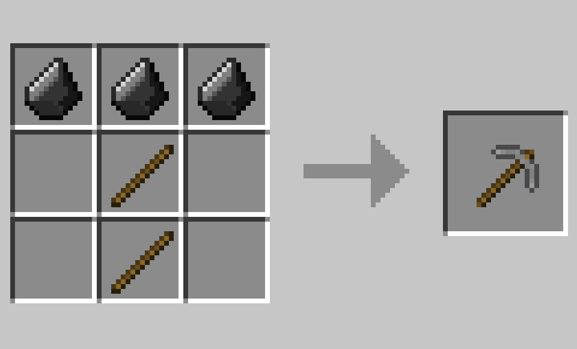
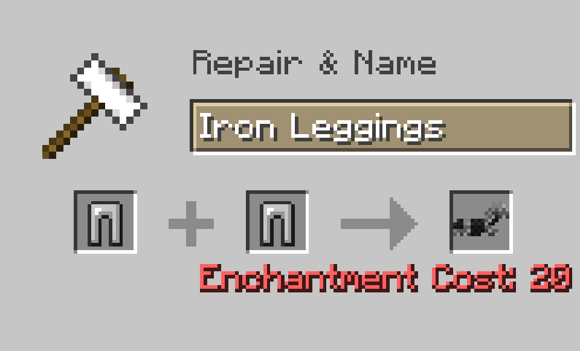
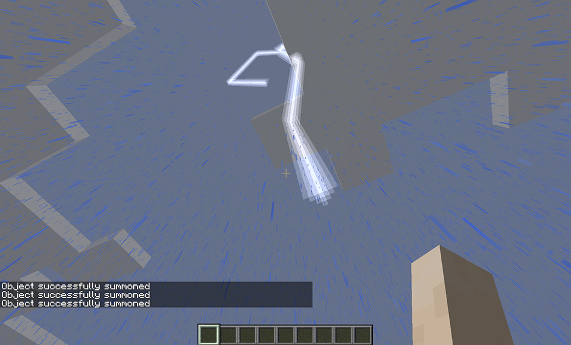
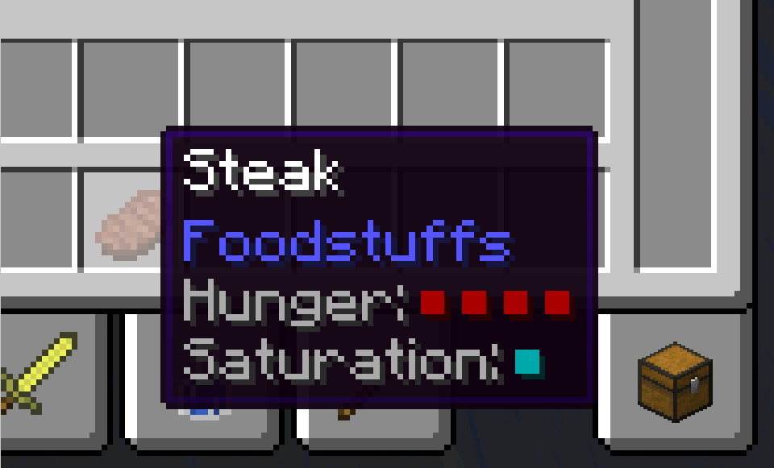

Base Game Changes
Miscellaneous Tweaks
Filter by Game Version:

1.8.x, 1.9.x

Horse Armor Crafting
1.8.x, 1.9.x, 1.10.x, 1.12.x

Stack Tweaks
1.8.x, 1.9.x, 1.10.x

Thunder Storm Quelling
1.8.x, 1.9.x, 1.10.x, 1.12.x, 1.14.x

Extra Tooltips
1.8.x, 1.9.x, 1.10.x, 1.12.x, 1.14.x
Base Game Tweaks
Looking to spice up your game? Then this is an easy, safe bet to do it!
This (disabled by default) feature makes stone drop gravel (or flint), and makes flint the required item for crafting stone tools. Cobblestone can be crafted with a 2x2 of Gravel - allowing the rest of your game to progress like normal.
This (disabled by default) feature makes stone drop gravel (or flint), and makes flint the required item for crafting stone tools. Cobblestone can be crafted with a 2x2 of Gravel - allowing the rest of your game to progress like normal.
Horse Armor Crafting
Craft horse armor using two pairs of undamaged, matching leggings and some experience!
Experience cost is not configurable.
Experience cost is not configurable.
Stack Size Tweaks
A very simple concept: things with unnaturally small stack sizes have been increased to 64!
Thunder Storm Quelling
Lightning from Thunder Storms in chunk-loaded chunks can cause some strange ghost light blocks.
V-Tweaks remedies this by disabling thunder storms altogether, in a clean fashion. Might be incompatible with mods which depend on thunderstorms though!
V-Tweaks remedies this by disabling thunder storms altogether, in a clean fashion. Might be incompatible with mods which depend on thunderstorms though!
Extra Tooltips
First is a lightweight alternative to features like AppleCore's hunger overlay: a useful tooltip
telling you hunger and saturation
Saturation is on a RGB scale from Red to Cyan, Red being worst and Cyan being best. Hunger is shown by Red and faded Red boxes; faded red being half of a hunger haunch, and solid red being a full haunch.
Second is a simple little durability tooltip, telling you how many uses the tool has left!
Both tooltips are configurable to be on by default, only while sneaking, or off (settings are mutually exclusive).
Saturation is on a RGB scale from Red to Cyan, Red being worst and Cyan being best. Hunger is shown by Red and faded Red boxes; faded red being half of a hunger haunch, and solid red being a full haunch.
Second is a simple little durability tooltip, telling you how many uses the tool has left!
Both tooltips are configurable to be on by default, only while sneaking, or off (settings are mutually exclusive).